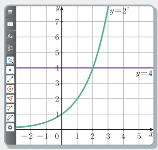

2026학년도 1학기 | 대수
지수함수 \(y=2^x\)의 그래프와 직선 \(y=4\)를 한 좌표평면에 그렸다.

[개방형 발문] ① 그래프 \(y=2^x\)와 직선 \(y=4\)는 몇 번 만나는가? ② 그 교점의 \(x\)좌표는 방정식 \(2^x=4\)와 어떤 관계인가? 교점이 꼭 하나뿐인 이유를 지수함수의 성질로 설명해 보자.
[연결] \(y=a^x\)는 일대일함수라서 같은 높이에서 딱 한 번만 만난다 — 그래서 \(a^{x_1}=a^{x_2}\)이면 \(x_1=x_2\). 또 증가·감소가 정해져 있어 크기 비교도 지수끼리 옮길 수 있다. 오늘은 ① 지수방정식, ② 지수부등식(밑과 1의 크기 비교), ③ 실생활 문제(반감기·약물·기름 증발)를 해결한다.
지수함수 \(y=a^x\)는 일대일함수이므로, 지수에 미지수가 있는 방정식은 양변의 밑을 같게 한 뒤 지수끼리 비교한다.
\(a\gt 0,\ a\ne 1\)일 때, \(a^{x_1}=a^{x_2} \iff\) \( x_1=x_2 \)
예제 1 — 다음 방정식을 푸시오.
(1) \(3^x=\dfrac{1}{81}\) : \(\dfrac{1}{81}=3^{-4}\)이므로 \(x=\) \(-4\)
(2) \(\left(\dfrac{1}{2}\right)^x=(\sqrt2)^{x-2}\) : 좌변 \(=2^{-x}\), 우변 \(=2^{\frac{x}{2}-1}\) → \(-x=\dfrac{x}{2}-1\) → \(x=\) \(\dfrac{2}{3}\)
요령: \(\dfrac{1}{a}=a^{-1}\), \(\sqrt a=a^{\frac12}\), \(4=2^2\), \(27=3^3\)처럼 가장 작은 공통 밑으로 바꾼다.
\(a\gt1\)이면 \(y=a^x\)는 증가, \(0\lt a\lt1\)이면 감소한다. 그래서 지수끼리 비교할 때 부등호 방향이 달라진다.
예제 2 — 다음 부등식을 푸시오.
(1) \(8^x\gt32\) : \(2^{3x}\gt2^5\), 밑 \(2\gt1\) → \(3x\gt5\) → \(x\gt\dfrac{5}{3}\)
(2) \(\left(\dfrac13\right)^{x+7}\le\left(\dfrac19\right)^x\) : 우변 \(=\left(\dfrac13\right)^{2x}\), 밑 \(\dfrac13\lt1\) → \(x+7\ge2x\) → \(x\le7\)
⚠ 주의: 밑이 \(1\)보다 작으면 지수로 옮길 때 부등호 방향을 뒤집는다.
\(^{14}\mathrm{C}\)는 \(5730\)년마다 양이 반으로 줄어든다. 처음 양이 \(a\) mg일 때 \(x\)년 후 남은 양은 \(f(x)=a\times\left(\dfrac12\right)^{\frac{x}{5730}}\) (mg).
예제 3: 처음 \(50\) mg이던 \(^{14}\mathrm{C}\)가 \(12.5\) mg 남은 화석은 몇 년 전의 것인가?
\(50\times\left(\dfrac12\right)^{\frac{x}{5730}}=12.5\) → \(\left(\dfrac12\right)^{\frac{x}{5730}}=\dfrac{125}{500}=\left(\dfrac12\right)^{2}\) → \(\dfrac{x}{5730}=2\) → \(x=\) \(11460\) (년)
오개념 주의: 실생활 변수(시간·양)는 범위가 있다 — 시간 \(x\ge0\), 양 \(\gt0\). 답을 낸 뒤 단위·범위를 꼭 확인한다.
한 줄 요약: "밑 맞추기 → 밑 확인(1보다 큰가, 미지수인가) → 지수 비교 → 범위 확인".
밑을 같게 만들어 지수방정식·부등식을 푸는 단계
실생활 상황을 지수 식으로 세우고 해석하는 단계
"틀려야 는다!" 밑의 조건 · 치환한 문자의 범위
"\(a^{x_1}=a^{x_2}\iff x_1=x_2\)"는 \(a\gt0,\ a\ne1\)일 때만 성립한다. 밑이 \(x\)이면 \(x=1\)인 경우를 따로 봐야 한다 — \(1\)은 몇 제곱을 해도 \(1\)이라 지수가 달라도 양변이 같다.
\(2^x=t\)로 치환하면 \(t\gt0\)이라는 조건이 따라온다. 이차방정식의 근 중 음수인 \(t\)는 \(2^x\)가 될 수 없으므로 버려야 한다. 또 \(t\)에 대한 답을 구한 뒤 \(x\)로 되돌리는 것을 잊지 말 것.
📖 출처: 교과서 57쪽 · 생각 넓히기 활동 1 교과서 57쪽 · 생각 넓히기 활동 1 그대로
난이도 ★★★ (7분) · 핵심: \(a^x\) 꼴이 반복되면 치환 — 치환한 문자의 범위
핵심: 답 (1) \(X^2-3X-4=0\) (2) \(X=4\), \(x=2\).
📖 출처: 자체 출제 자체 출제 · 서로 다른 두 실근을 갖는 지수방정식 유형
난이도 ★★★★ (8분) · 핵심: 치환 후 '양수인 서로 다른 두 근' 조건 (판별식 · 두 근의 합 · 곱)
핵심: \(k\le0\)이면 \(t\)의 근 하나가 \(0\) 이하가 되어 \(x\)의 근은 하나뿐이다.
스마트폰으로 우측 QR코드를 스캔하여, 아래 3가지 유형 중 하나 이상을 체크하고 통합 서술형으로 작성해 제출한다.